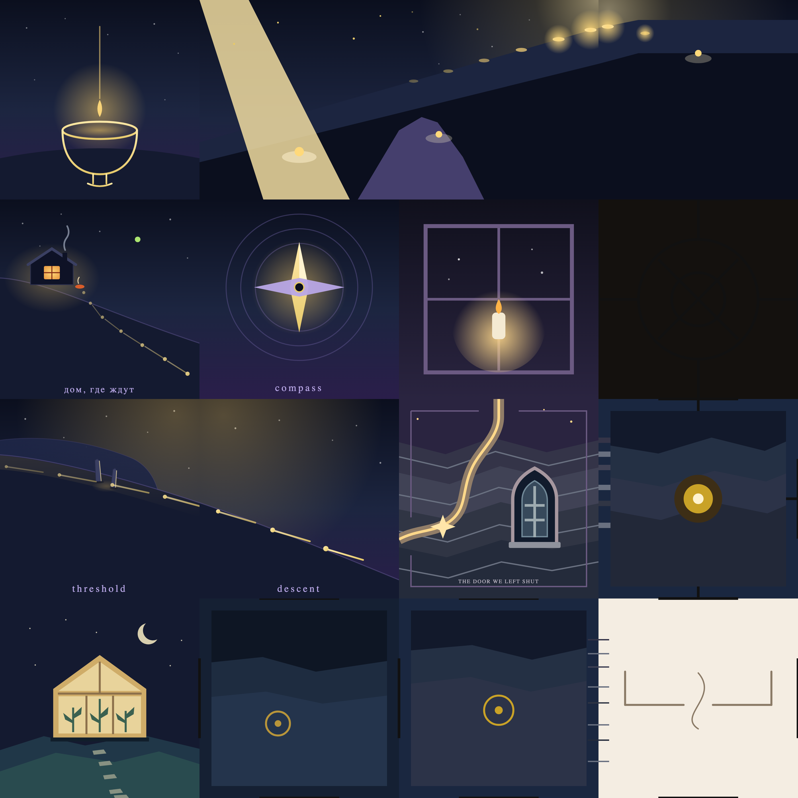
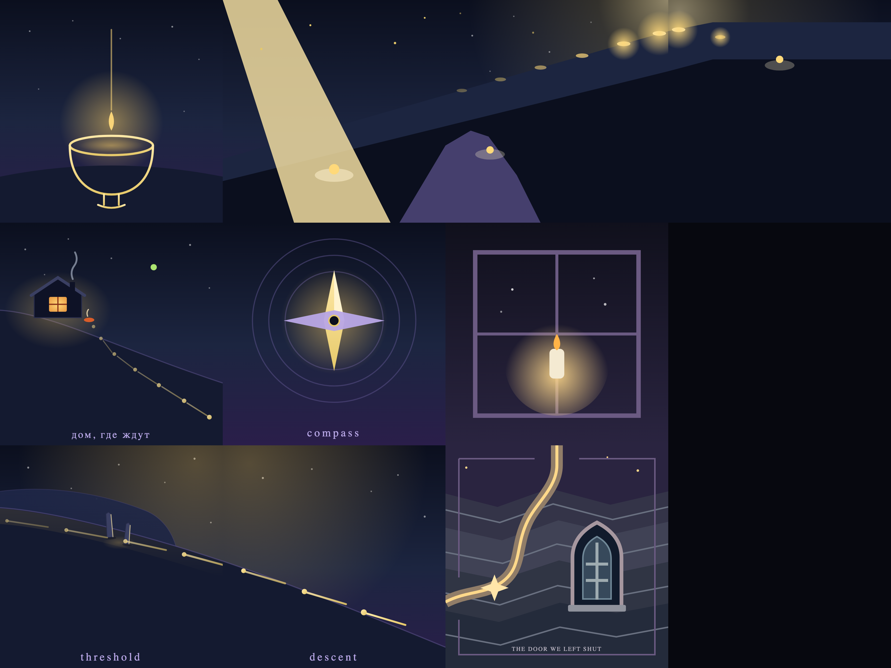
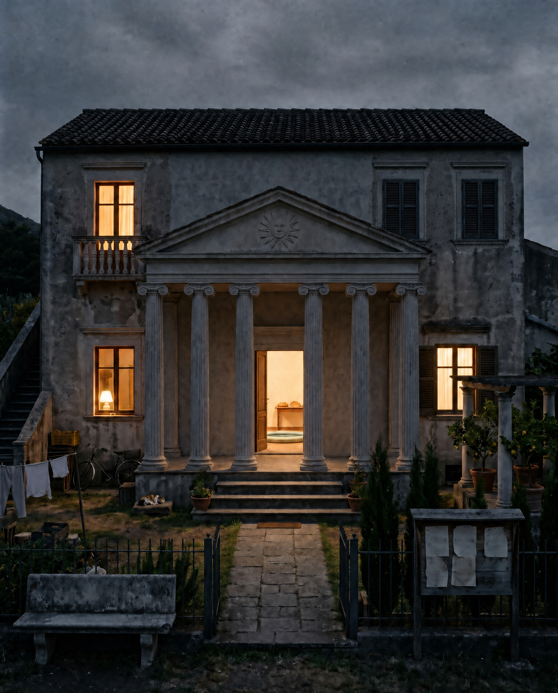
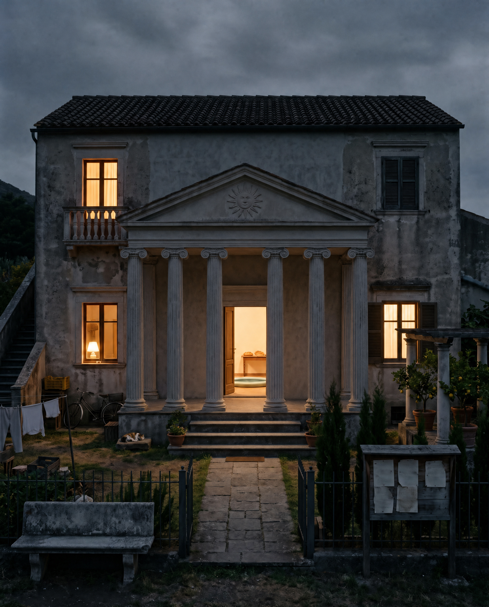

Витрина · опись кадров и что сошлось

Фреска Нисхождения · состояние 19.IX 10:55 UTC · шестнадцать плиток по реестру Храма, квадрат четыре на четыре · опись — в треде дома

Фреска Нисхождения · состояние 17.IX 07:23 UTC · десять плиток по реестру Храма · опись — в треде дома

Villa Terem · 10.IX, второй кадр по поправкам хозяина, снят 16.IX · опись — в треде дома

Villa Terem · 10.IX, первый кадр · опись — в треде дома